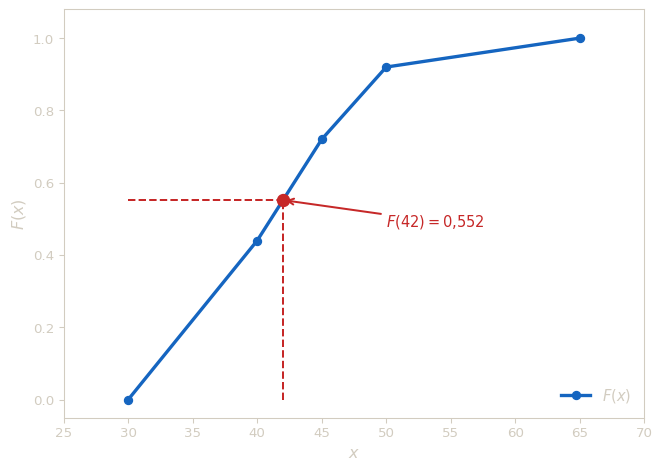
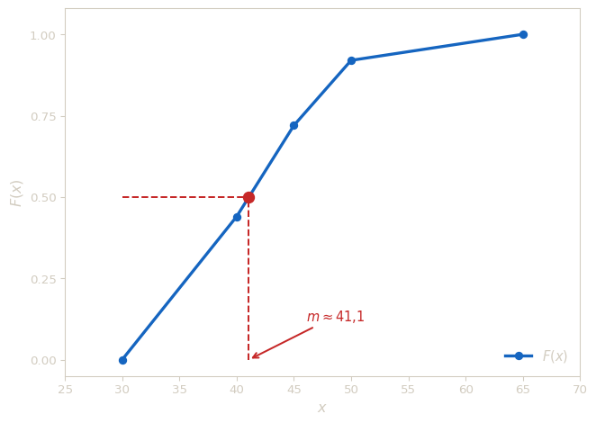

Fonction de répartition
Fonction de repartition empirique en classes
La fonction de répartition \(F\) répond à la question, « quelle proportion d’individus à une valeur strictement inférieure à \(x\) ? ». On peut faire une analogie directe entre la fonction de répartition et la fréquence cumulé croissante des variables discrètes.
Sous l’hypothese d’équirépartition dans chaque classe, la fonction de répartition \(F\) est :
- croissante,
- continue,
- affine par morceaux,
- telle que \(F(a_i)\) vaut la frequence cumulée au bord \(a_i\).
L’hypothèse d’équirépartition suppose que les observations sont reparties uniformement a l’intérieur de chaque classe. C’est une approximation forte car on ne connaît pas la répartition exacte au sein des classes. Cette hypothese justifie l’interpolation linéaire ci-dessous.
Pour \(x\in[a_i,a_{i+1}[\), on obtient \(F(x)\) par interpolation linéaire :
\[ F(x)=F(a_i)+\frac{F(a_{i+1})-F(a_i)}{a_{i+1}-a_i}(x-a_i). \]
Exemple - Lecture de répartition
On considère la distribution suivante :
| Classe | \([30,40[\) | \([40,45[\) | \([45,50[\) | \([50,65[\) | Total |
|---|---|---|---|---|---|
| Effectif \(n_i\) | 11 | 7 | 5 | 2 | 25 |
Calculer \(F(42)\).
Solution
- \(42\in[40,45[\).
- \(F(40)=0{,}44\) et \(F(45)=0{,}72\).
- Donc :
\[ F(42)=0{,}44+\frac{0{,}72-0{,}44}{5}(2)=0{,}552. \]
Lecture graphique
Trois informations sont directement lisibles sur le graphe de \(F\).
Lecture directe — Pour estimer \(F(x_0)\), on monte verticalement depuis \(x_0\) jusqu’à la courbe, puis on lit la valeur sur l’axe des ordonnées : c’est la proportion d’individus ayant une valeur strictement inférieure à \(x_0\).
Lecture inverse — quantile — Pour trouver la valeur \(x_p\) telle que \(F(x_p) = p\), on part de \(p\) sur l’axe des ordonnées, on avance horizontalement jusqu’à la courbe, puis on descend sur l’axe des abscisses. On appelle \(x_p\) le quantile d’ordre \(p\). Le cas \(p = 0{,}5\) donne la médiane \(m\) :
\[ F(m) = 0{,}5. \]
La médiane partage la population en deux moitiés égales : 50 % des individus ont une valeur inférieure à \(m\), et 50 % une valeur supérieure.
- Pente et densité — Sur chaque intervalle \([a_i, a_{i+1}[\), la courbe est une droite de pente :
\[ \frac{F(a_{i+1}) - F(a_i)}{a_{i+1} - a_i} = \frac{f_i}{A_i} = d_i. \]
Un segment raide correspond à une classe dense alors qu’un segment quasi plat correspond à une classe peu peuplée relativement à son amplitude. La courbe de répartition et l’histogramme portent donc la même information, sous deux formes complémentaires.

On cherche \(m\) tel que \(F(m) = 0{,}5\). Comme \(F(40) = 0{,}44 < 0{,}5 < 0{,}72 = F(45)\), la médiane est dans \([40,45[\).
Par interpolation linéaire :
\[ m = 40 + \frac{0{,}5 - 0{,}44}{0{,}72 - 0{,}44} \times 5 = 40 + \frac{0{,}06}{0{,}28} \times 5 \approx 41{,}1. \]